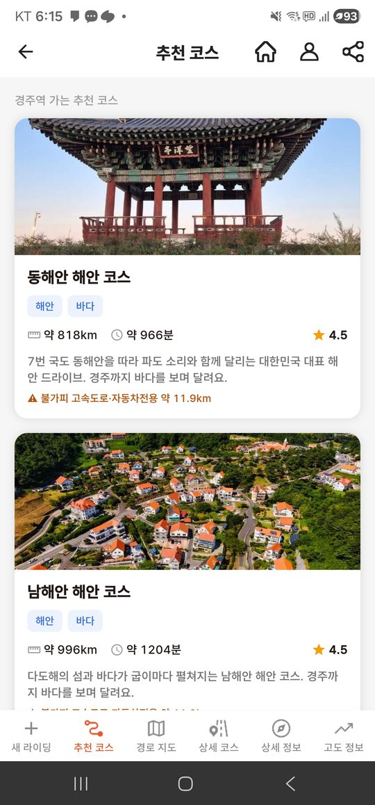
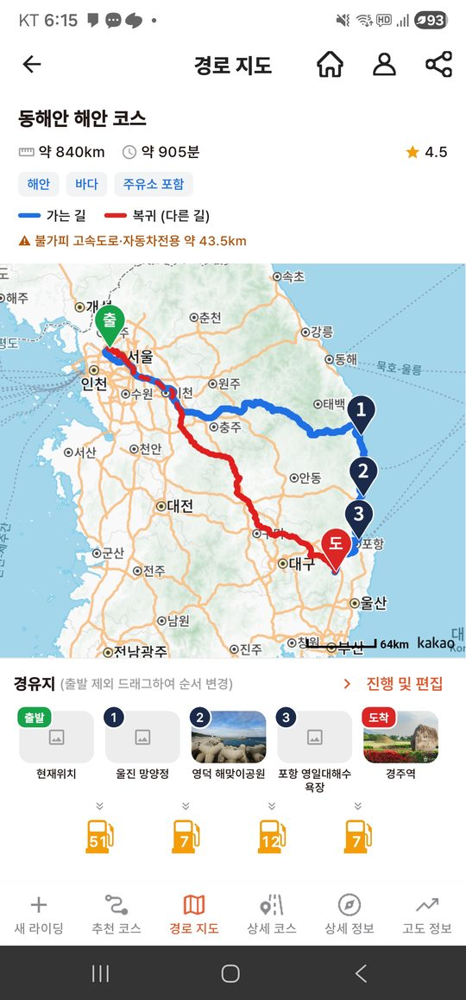
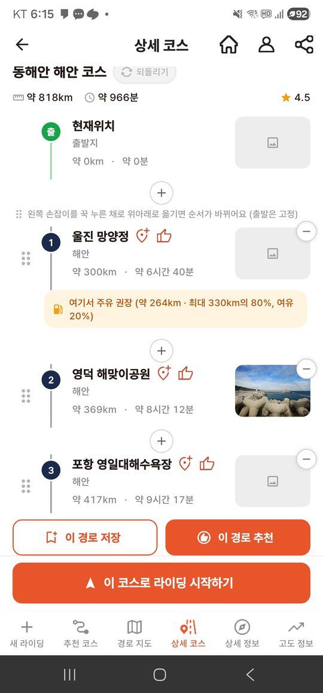
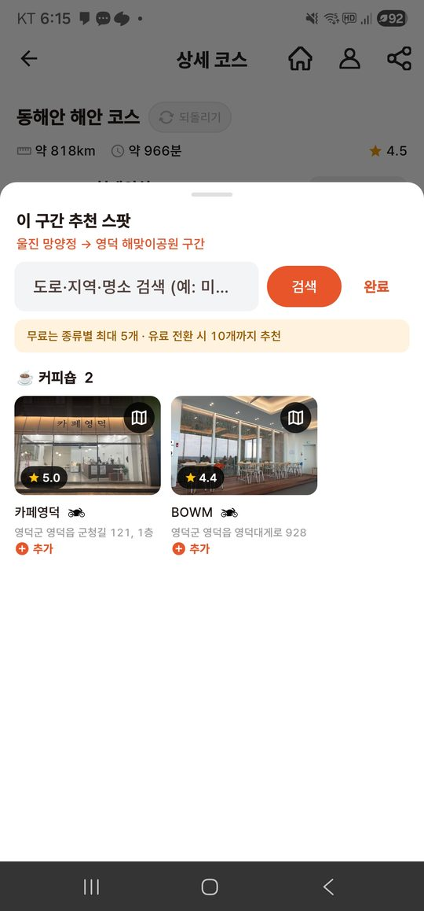

출발지와 목적지만 정하면, 고속도로·자동차전용도로를 피한 이륜차 통행 가능 경로를 만들고 경로 주변의 관광지와 맛집을 코스에 넣어줍니다. 라이더가 국도 위주로 안전하게 달리면서 지역의 관광지를 방문하도록 돕는 앱입니다.
한국관광공사 국문 관광정보 서비스를 활용한 화면입니다.
경로 주변 관광지를 경치 · 역사문화 · 카페맛집 테마로 묶어 코스로 제시합니다. 카드 썸네일에 관광공사 대표이미지를 사용합니다.
출발 → 경유지 → 도착 순서로 각 지점의 이름 · 주소 · 사진을 보여주고, 바이크 주행거리에 맞춰 주유 권장 지점을 자동으로 넣습니다.
경유지 사이 구간 주변의 관광지 · 음식점을 위치기반 관광정보조회로 찾아 추천하고, 라이더가 눌러 코스에 추가합니다.
동해안 · 남해안 · 서해안의 대표 해안 관광지를 경유하는 코스를 제공합니다.
실제 앱 화면입니다.




한국관광공사_국문 관광정보 서비스_GW
| 위치기반 관광정보조회 | 라이딩 경로 주변의 관광지 · 음식점을 검색해 코스 후보로 제시 |
| 키워드 검색 조회 | 코스 카드와 스팟 카드에 표시할 대표이미지 조회 |
| 공통정보조회 | 스팟의 주소 · 좌표 · 개요 등 상세정보 조회 |
| 관광정보 동기화 목록 조회 | 관광정보를 주기적으로 내려받아 앱 내 캐시를 갱신 (호출량 절감) |
| 지역기반 관광정보조회 | 지역 단위 관광정보 수집 |
출처: 한국관광공사 국문 관광정보 서비스 — 공공데이터포털